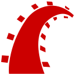
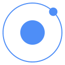
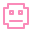

Programming

Ruby on RailsI'm Rio Rasyha Syadzily, an Informatics Engineering student and aspiring Full-Stack Developer passionate about turning ideas into functional digital experiences. I enjoy building web and mobile applications, exploring game development, and continuously improving my skills through hands-on projects.

An Informatics Engineering student exploring software development through academic projects, personal projects, and competitions.
I'm an Informatics Engineering student at Universitas Buana Perjuangan Karawang with an interest in building practical software solutions.
I have experience developing web and mobile applications using Laravel, PHP, JavaScript, Ionic Angular, and MySQL. I also have experience in game development using Unity and C#.
Through academic projects, personal projects, and technology competitions, I continue to develop my technical skills while learning how to collaborate effectively in a team.
Bachelor of Informatics Engineering
GPA stay tuned~Still long way to go
in development of Game and Command ToolsA collection of technologies and tools I have used across academic, personal, and competition projects.

Ruby on Rails
Ionic
Pixel Art AsepriteA selection of web, mobile, game, and software development projects I've worked on.
An E-Procurement platform designed to support tender, vendor, bidding, and procurement processes through web and mobile applications.
An offline Android habit-tracking application with daily check-ins, streak tracking, and local data storage.
A 2D game developed for GEMASTIK XIX 2026 using Unity and C#, with a focus on creative direction, gameplay, and team collaboration.
A web-based Event Organizer application developed as a team project, covering front-end and back-end functionality.
Technology competitions that provided opportunities to develop software while working under project constraints.
Represented Universitas Buana Perjuangan Karawang and led a team in developing a 2D game using Unity and C#. Responsible for the game's core concept, creative direction, and team coordination.
Developed an E-Procurement web application using Laravel, PHP, Tailwind CSS, and Bootstrap, while contributing to the Ionic Angular mobile application. Presented and demonstrated the project to a panel of industry professionals.
Experiences that have strengthened my communication, organization, teamwork, and leadership skills.
Manage organizational administration, documentation, correspondence, and organizational records to support internal activities.
Managed administrative documentation and coordination while preparing supporting materials and resources throughout the event.
Participated in structured Japanese and English language learning activities, including practice sessions, quizzes, and assessments.
Participated in student organization activities and various technology-related initiatives while gaining experience in organizational activities within the school environment.